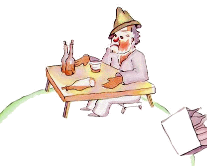

小王子 The Little Prince
第12章
第12章
下一颗行星上住着一个酒鬼。这次访问时间很短，却使小王子陷入了深深的怅惘之中。
他看见那个酒鬼静静地坐在桌前，面前有一堆空酒瓶和一堆装得满满的酒瓶，他就问：“你在那儿干什么呢？”
“我喝酒，”酒鬼神情悲伤地回答。
“你为什么要喝酒呢？”小王子问。
“为了忘记，”酒鬼回答。
“忘记什么？”小王子已经有些同情他了。
“忘记我的羞愧，”酒鬼垂下脑袋坦白说。
“为什么感到羞愧？”小王子又问，他想帮助这个人。
“为喝酒感到羞愧！”酒鬼说完这句话，就再也不开口了。
小王子茫然不解地走了。
“这些大人真的很怪很怪，”一路上，他自言自语地说。